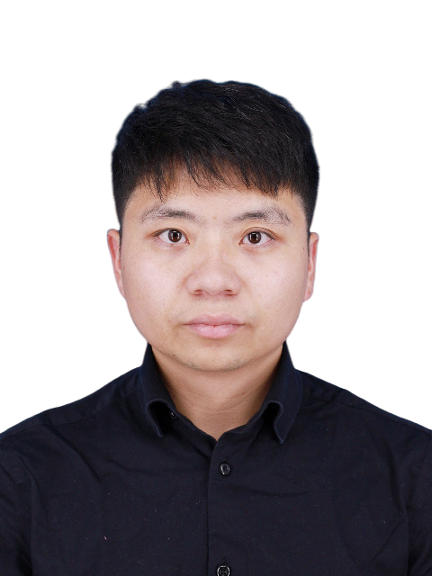

郑智润, 博士后, Zhirun Zheng
地址: Paldal Hall 631, 206 Worldcup-ro, Suwon 16499, South Korea
邮箱: zhengzhirun2019@gmail.com
Homepage in English
最新消息
- 2024年10月：我们的论文 "Defending Data Poisoning Attacks in DP-based Crowdsensing: A Game-Theoretic Approach" 被CCF网络领域A类期刊 IEEE TMC 接收.
简介
郑智润, 自2024年10月起在韩国亚洲大学从事博士后工作, 师从Prof. Young-June Choi. 他先后于2024年6月在湘潭大学数学与计算科学学院获得理学博士学位, 导师为李哲涛教授 (国家高层次人才), 于2017年6月在河南科技大学数学与统计学院获得理学学士学位. 他曾作为联合培养博士研究生于2022年12月至2023年12访问加拿大滑铁卢大学, 外导为中国工程院外籍院士沈学民教授.
研究兴趣为群智系统和人工智能中的隐私及安全问题.
期刊论文
- [IEEE TDSC] Zhirun Zheng, Zhetao Li, Cheng Huang, Saiqin Long, Mushu Li, and Xuemin (Sherman) Shen. “Data Poisoning Attacks and Defenses to LDP-based Privacy-Preserving Crowdsensing,” IEEE Transactions on Dependable and Secure Computing, vol. 21, no. 5, pp. 4861-4878, 2024. (CCF安全领域A类期刊)
- [IEEE TMC] Zhetao Li, Zhirun Zheng, Suiming Guo, Bin Guo, Fu Xiao, and Kui Ren. “Disguised as Privacy: Data Poisoning Attacks against Differentially Private Crowdsensing Systems,” IEEE Transactions on Mobile Computing, vol. 22, no. 5, pp. 5155-5169, 2023. (CCF网络领域A类期刊)
- [IEEE TIFS] Zhirun Zheng, Zhetao Li, Hongbo Jiang, Leo Yu Zhang, and Dengbiao Tu. “Semantic-aware Privacy-Preserving Online Location Trajectory Data Sharing,” IEEE Transactions on Information Forensics and Security, vol. 17, pp. 2256-2271, 2022. (CCF安全领域A类期刊)
- [ACM TIST] Zhirun Zheng, Zhetao Li, Jie Li, Hongbo Jiang, Tong Li, and Bin Guo. “Utility-aware and Privacy-Preserving Trajectory Synthesis Model that Resists Social Relationship Privacy Attacks,” ACM Transactions on Intelligent Systems and Technology, vol. 13, no. 3, pp. 1-28, 2022.
- [IEEE TVT] Jie Li, Fanzi Zeng, Zhu Xiao, Zhirun Zheng, Hongbo Jiang, and Zhetao Li. “Social Relationship Inference Over Private Vehicle Mobility Data,” IEEE Transactions on Vehicular Technology, vol. 70, no. 6, pp. 5221-5233, 2021.
荣誉 & 奖励
- 湖南省优秀毕业博士研究生(湖南省教育厅颁发), 2024
- IEEE CSCloud/EdgeCom, 2023获最佳学生论文奖
- 博士研究生国家奖学金(中华人民共和国教育部颁发), 2022
- “华为杯”中国研究生数学建模竞赛(中国研究生数学建模竞赛组委会举办), 2017获全国三等奖
- 美国大学生数学建模竞赛(美国数学及其应用联合会举办), 2016年获一等奖(Meritorious Winner) & 2017年获二等奖(Honorable Winner)
- “高教社杯”全国大学生数学建模竞赛(全国大学生数学建模竞赛组织委员会举办), 2015获全国二等奖
科研项目
- 主持湖南省研究生科研创新项目, “数据发布中的隐私保护关键技术研究” (编号 CX20200618), 2020.06-2022.06, 1.5万元
学术兼职
- TPC Member of IEEE GLOBECOM 2024
- TPC Member of WCSP 2024
Last Updated: 2024-10-26